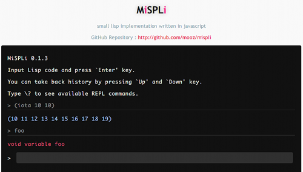

english / japanese
mooz deceives you
(eval mooz) ; => nil
Products
Firefox / Thunderbird 拡張機能
KeySnail

KeySnail は Firefox や Thunderbird のキーバインドをカスタマイズする拡張機能です. Vimperator に匹敵する拡張性を備えつつ, GUI による設定などのユーザフレンドリーなインタフェースが使用可能となっています. 作者の趣味により, Emacs ユーザが喜びそうな機能を数多く実装.
Clipple

Clipple は Firefox 用のシンプルなクリップボードマネージャです. ユーザがコピーしたテキストを, 後から貼り付けられるように拡張クリップボードに保持しておきます.
JavaScript
MiSPLi
MiSPLi は JavaScript で書かれた Lisp の処理系とその REPL です. 静的スコープ, レキシカルクロージャ, マクロ, 基本的な関数やスペシャルフォームといった一通りの機能を備えています.
C.H.A.O.T.I.C C.A.N.V.A.S

C.H.A.O.T.I.C C.A.N.V.A.S は JavaScript と HTML Canvas を使用したカオスフラクタル生成器です.
Emacs Lisp

js-doc.el

js-doc.el は, Emacs で JsDoc 形式のコメントを扱いやすくさせてくれる elisp です.
Greasemonkey Script
You keyboard junky

You keyboard junky をインストールすることで, YouTube のプレイヤーををキーボードから操作することが可能となります.